Bedroom
Repeated frame intersections and drawer corners provide stable landmarks throughout the overlap.
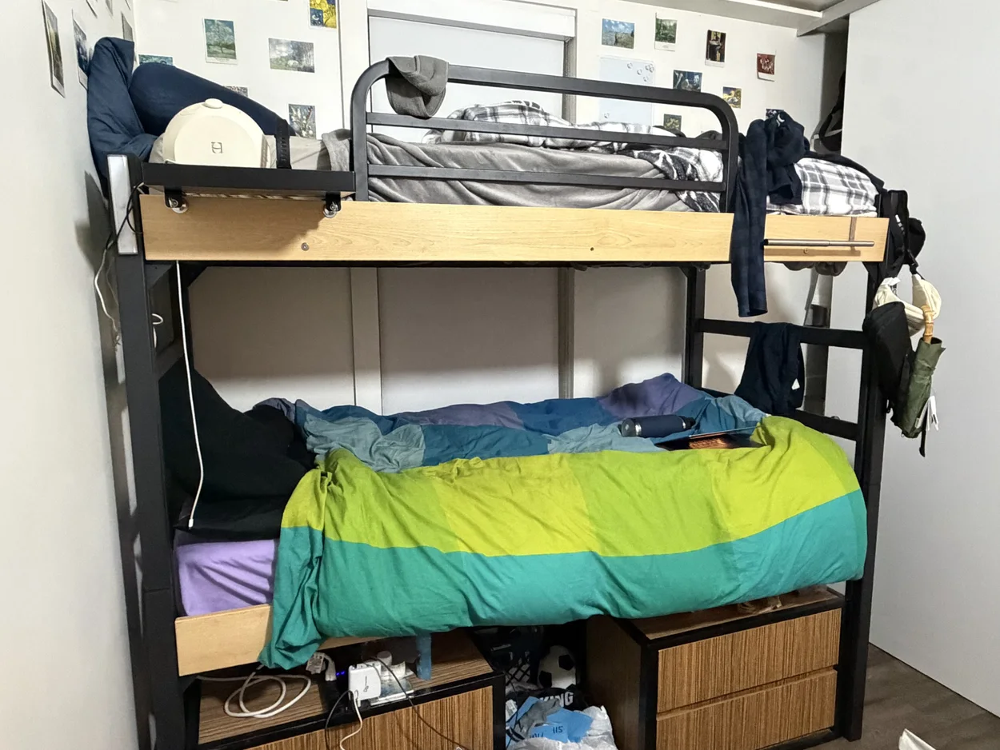
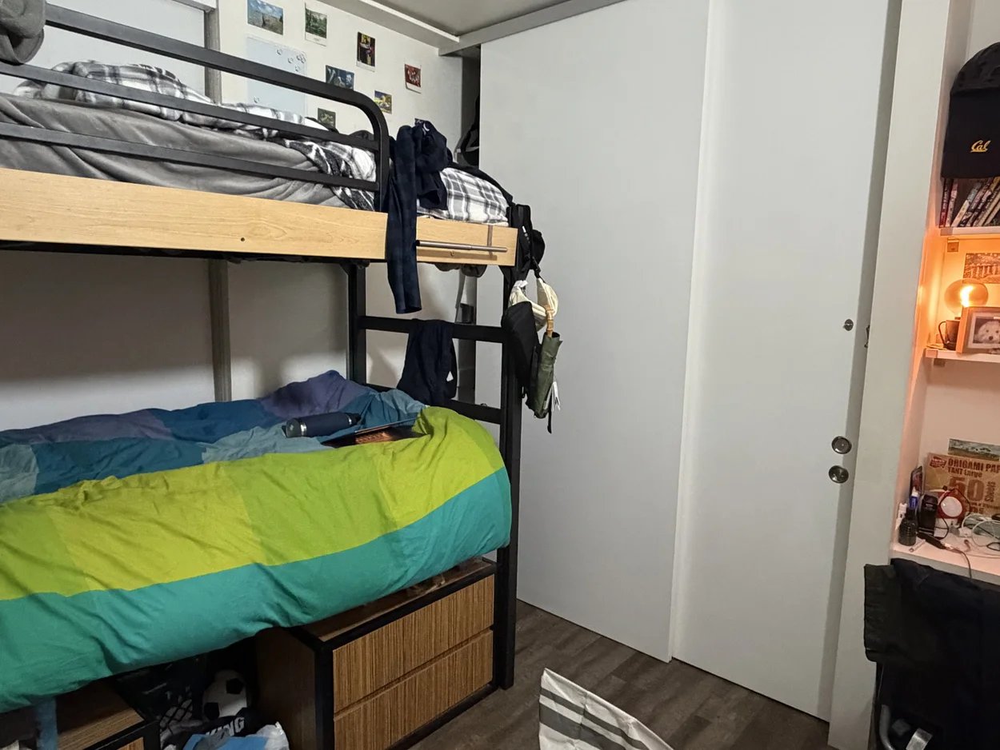
Project 04 · Part A · Fall 2026
Recovering projective geometry from hand-picked correspondences, looking straight at surfaces photographed obliquely, and stitching overlapping views into one continuous field of view.
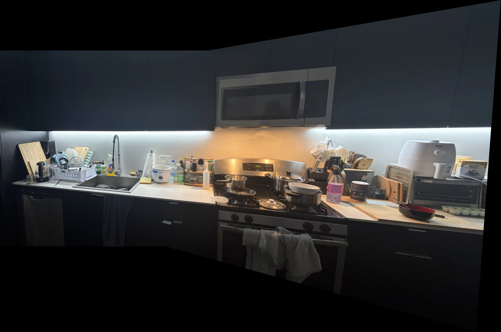
I photographed three scenes in overlapping pairs, rotating the camera from approximately one viewpoint instead of translating it. Each pair preserves enough shared structure to identify the same physical landmarks in both images.
The bedroom is dominated by a rigid bed frame, the bicycle area mixes several depths, and the kitchen offers long horizontal cabinet and counter edges. Together they expose both the strengths and limitations of a single planar projective model.
Repeated frame intersections and drawer corners provide stable landmarks throughout the overlap.


Wall seams and fixed structural details anchor the alignment; nearby bicycles reveal foreground parallax.
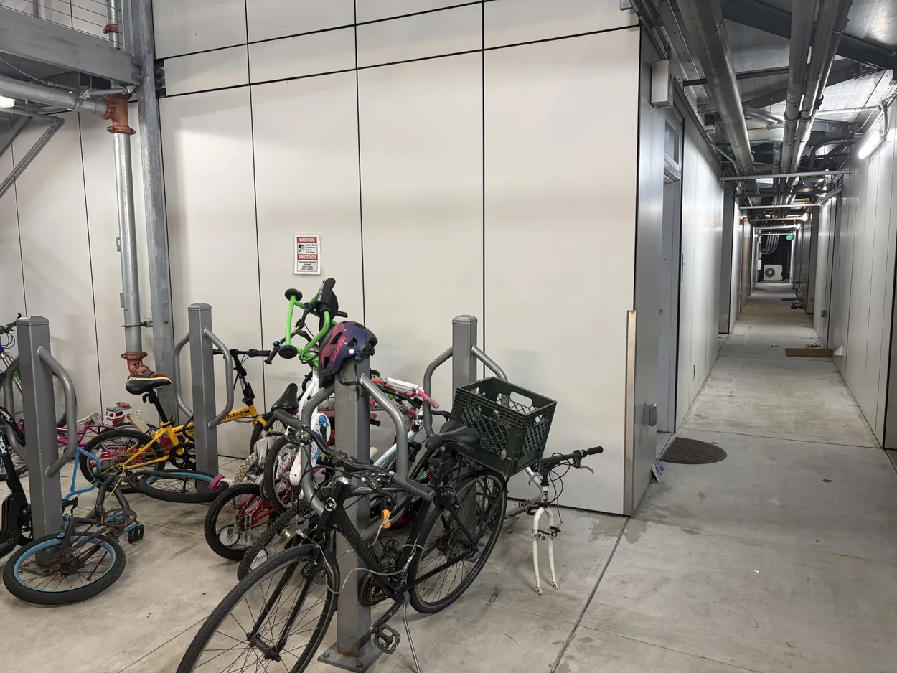
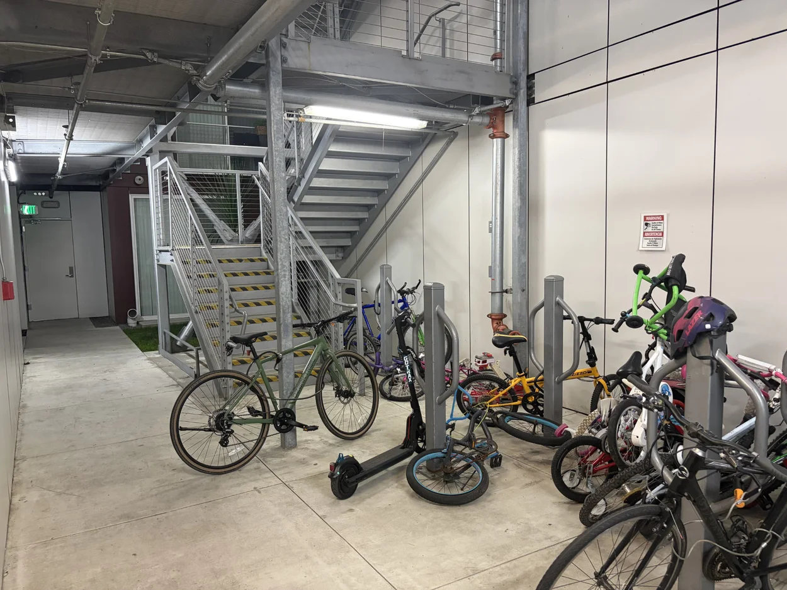
Cabinet seams, the counter edge, and fixed appliance features distribute correspondences across the shared view.
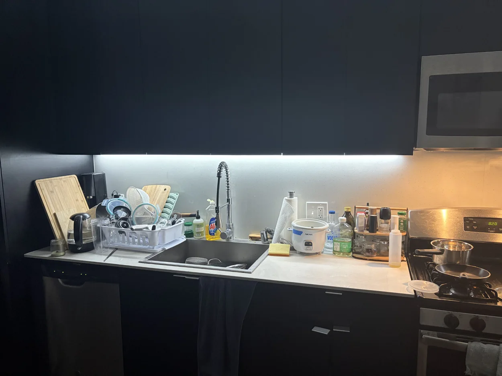
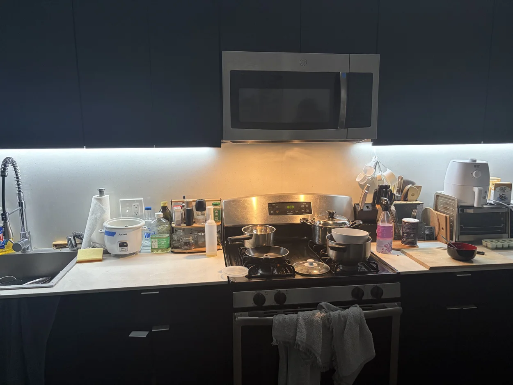
A homography maps a source point to a destination point in homogeneous
coordinates. Fixing h33 = 1 leaves eight unknowns.
Every correspondence contributes two linear equations, so eight matches
form an overdetermined system that I solve with NumPy least squares.
Before solving, I apply Hartley normalization: translate each point set
to zero mean and scale its average distance from the origin to
√2. I then denormalize the fitted matrix. This improves
conditioning without changing the projective mapping.
The final coordinate is obtained by dividing the first two homogeneous
components by the third. In each mosaic, H maps the second
photograph into the unchanged reference photograph.
Stacking these two rows for every (x, y) → (u, v)
match gives Ah = b. Well-spread, non-collinear points make
the fit substantially more stable.
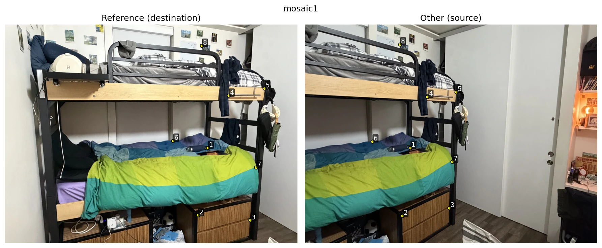
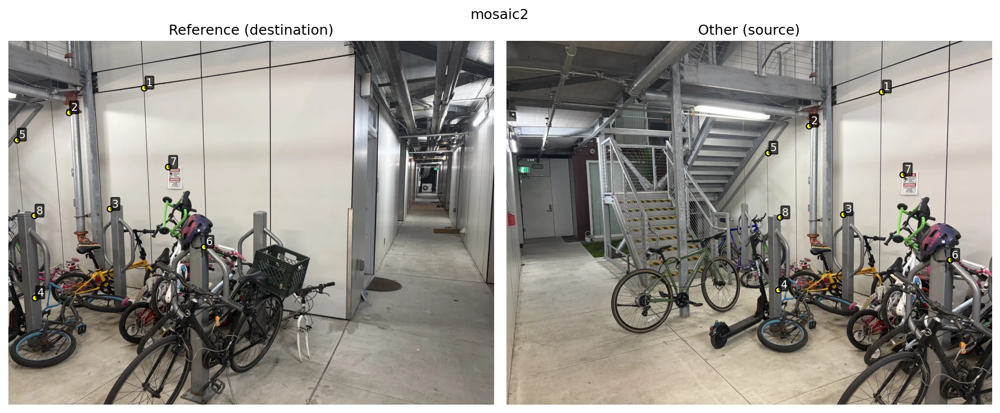
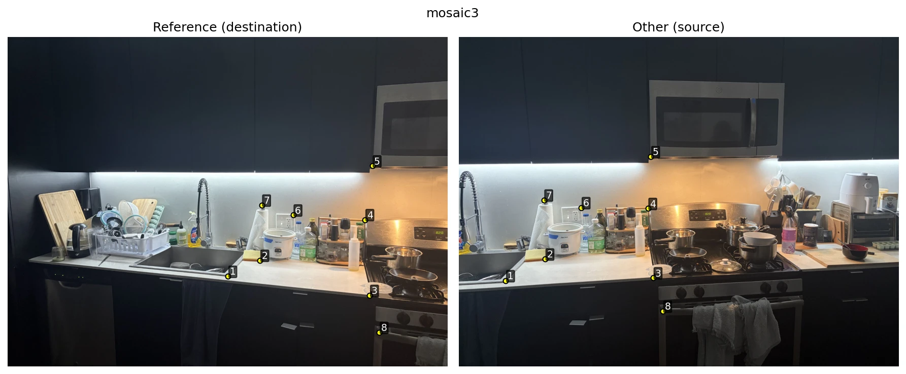
[[ 0.3853 -0.0333 522.4329]
[-0.1986 0.7898 87.2100]
[-0.0005 -0.0000 1.0000]][[ 2.7862 0.0641 -1852.0046]
[ 0.5413 2.3993 -550.7210]
[ 0.0014 0.0001 1.0000]][[ 0.5030 -0.0056 537.5800]
[-0.1568 0.8589 78.1193]
[-0.0004 0.0000 1.0000]]
Forward mapping can leave holes because transformed source pixels do not
necessarily land on integer destination coordinates. Instead, I enumerate
every destination pixel, apply H-1, and sample the
resulting floating-point location in the source image.
For rectification, four photographed corners map to a rectangle with the physical surface's aspect ratio. The laptop result is especially revealing: after rectification, text captured at an angle becomes directly readable.
A validity mask rejects samples outside the source image. Nearest-neighbor rounds to one pixel; bilinear interpolation blends the surrounding four pixels using their fractional x and y distances.
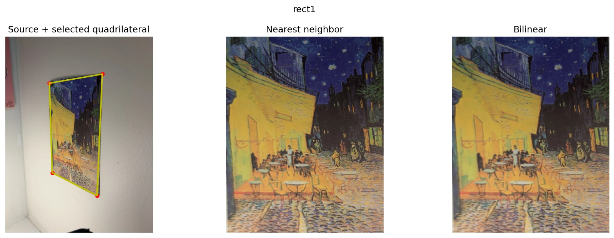
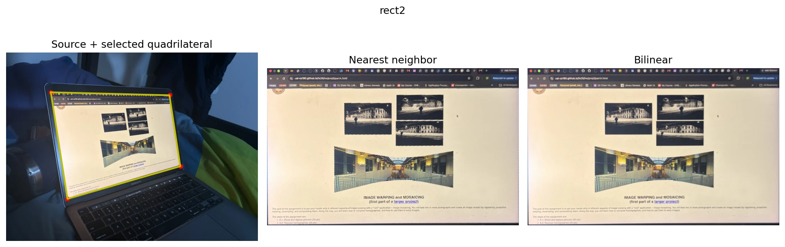
Preserves exact source values, but diagonal edges and small text can look jagged.
Uses four weighted samples for smoother edges, with a small amount of interpolation blur.
Keeps out-of-bounds samples from contributing to either rectified images or mosaics.
I keep the reference image in its original coordinate system, project the second image into that system, and compute a canvas large enough to contain both. In their overlap, each image receives a weight equal to its distance from the nearest validity-mask boundary; normalizing the two weights creates a gradual transition instead of a hard seam.
The angled outer boundaries are the honest footprint of projective warping. Black regions are uncovered canvas, not missing image data.
Distance-transform weights are largest inside each image and taper toward its boundary. The blend softens exposure differences while preserving all valid pixels covered by either view.
Rigid bed-frame and drawer landmarks produce the tightest fit of the three scenes. Feathering makes the handoff across the bed and wall difficult to locate at normal viewing size.
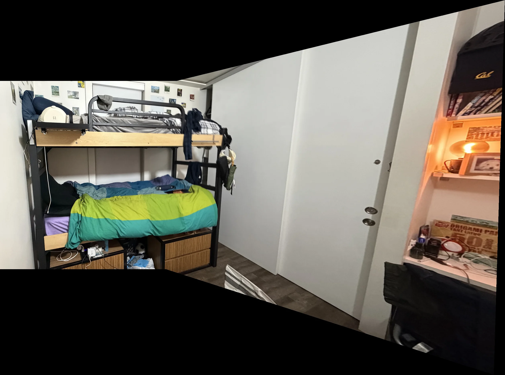
The wall and architectural structure align well, while nearby bicycles retain some doubling. Their depth changes relative to the background when the handheld viewpoint shifts, violating the single-homography model.
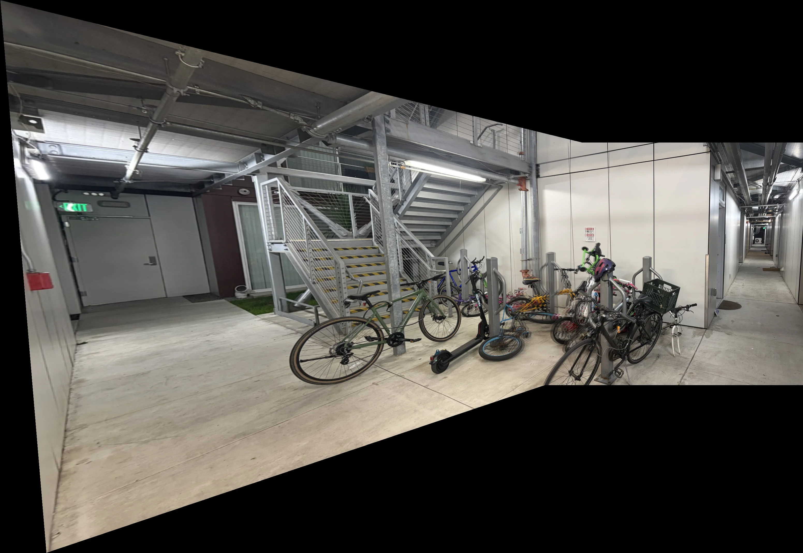
Cabinet seams and the counter form a stable shared structure across the pair. The resulting mosaic nearly doubles the horizontal field of view while keeping the microwave, stove, and counter continuous.
A few pixels of correspondence error can noticeably move an entire projected image.
Asking where every destination pixel came from avoids the holes created by forward splatting.
Distance weights work only when invalid warped pixels are excluded explicitly.
One projective transform cannot perfectly align a translated camera view containing many depths.